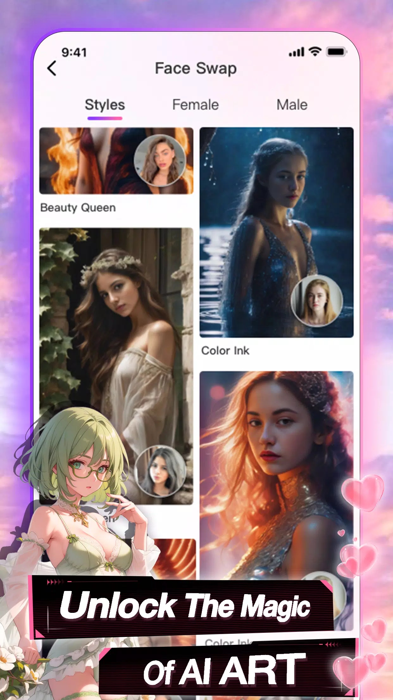

Seele 深度盘点：一款让你和 AI 角色真聊天的手机应用，能干的事远比想的多
从角色广场到 3D 形象，从捏卡创作到付费体系——系统性梳理 Seele 的完整能力面，帮你判断它到底适不适合你。
这两年 AI 聊天应用扎堆冒出来，但从Seele官网能看到，它还是有点不一样。大多数同类产品要么把重心放在「做一个万能 AI 助手」上，要么走纯剧情路线当互动小说卖。Seele 的路子更像一个「角色社区 + 创作工具 + 聊天引擎」的三件套组合——你可以什么都不做，直接进广场挑一张别人捏好的卡聊；也可以自己从零捏一个角色，给它写背景故事、贴性格标签，发布到广场让其他人也来聊。
这种社区化的定位，决定了 Seele 的能力面比单功能 AI 助手要宽得多。想自己试试的话，下载就能拿到安装包。下面我们按几个核心能力域来拆，聊聊每一块它到底提供了什么、亮点在哪、什么场景用得上。
角色广场：发现好角色的第一道门
打开 Seele 最先看到的就是角色广场。广场的默认第一屏是热门推荐区——它按近期活跃度和点赞数综合排序，把最多用户聊、最多人收藏的角色卡推在最上面。

热门区的好处很直接：你不用在几千张卡里翻来翻去，直接从已经被大量用户验证过的卡里挑就行。热门卡的人设通常比较清晰，背景故事写得完整，进对话之后 AI 很少出现「你好聊什么」式的尴尬开场。但热门也意味着「被聊得太多」——同一张毒舌学霸卡，可能已经被上万人聊过，对话的新鲜感不如冷门卡。
判断一张卡值不值得进对话，看三件事就够：性格标签直接告诉你对话时角色的主要风格（「毒舌学霸」「温柔御姐」「阳光少年」各有各的路数）；背景故事简介通常 3–5 行，讲清角色是谁、在哪、跟你是什么关系，这决定了进对话之后 AI 能不能立刻接住情境；作者和点赞数是质量参考——Seele 允许用户自己捏卡然后发布，点赞多的卡大概率经过了一轮筛选。
三件事对味了就进，不对味换下一张。逻辑简单粗暴，但在实际使用中很高效。
捏角色工具链：从零造一个能聊的角色
如果你不满足于现有角色，想自己造一个，Seele 提供了一套相当完整的捏卡工具链。

捏角色的核心是两个东西：性格标签和背景故事。性格标签管「怎么说话」——你给角色贴「嘴硬心软」「轻微社恐」「过度认真」这类标签，AI 就会在对话里往这个方向靠。背景故事管「为什么这么说话」和「在什么情境下说话」——这是很多新手容易忽略的点。
没有背景故事的角色，进对话之后 AI 不知道该从哪里接话，很容易聊两句就跑偏出戏。一个好的背景故事不需要很长（100–300 字足够），但必须包含三个要素：角色身份（它是谁——学生、同事、邻居、异世界勇者）、和你的关系（朋友、恋人、上司、对手——关系决定对话的亲密度和语气）、当前情境（角色现在在做什么、你们处于什么场景）。比如「是我的青梅竹马，从小一起在老街长大。现在在同一所大学，她学汉语言文学，今天在图书馆帮我整理笔记」——这样一段，给 AI 的对话锚点就非常具体。写得越细，角色贴得越牢。关于背景故事的更多正反例，可以去Seele文档里翻。
捏完卡可以选择发布到广场，让其他用户也来聊。从「造一个角色」到「被上千人聊」，整个流程在手机上就能完成——这是 Seele 社区生态能转起来的关键。
3D 形象：从平面卡到可交互的角色
Seele 里大部分角色是 2D 平面形象——对话时显示一张静态图或简单的动态表情。但部分热门高赞卡和官方精选角色有完整的 3D 形象，对话时会以可交互的 3D 模型形式出现：可以旋转、放大缩小、切换视角，甚至支持触摸互动。
平面形象轻量，低端机也能流畅跑；3D 形象视觉冲击力强，但对设备 GPU 有要求。性能不够的机型上开 3D 可能会出现帧率低、发热、电池消耗快的情况——遇到这些问题切回平面就行，设置里一键切换。
3D 形象的制作成本比平面高很多，所以并不是所有卡都有。自己捏角色时能不能启用也取决于应用版本和账号权限，以实际显示为准。这块是 Seele 区别于纯文本聊天应用的一个视觉加分项，但也不是所有人都需要——如果你只是想专注对话，平面形象完全够用。
付费与星系统：先想清楚自己是哪种用户
Seele 有两类付费项目：一次性充值（买一定数量的星，直接到账用完为止）和订阅服务（按月或按年付费，提供持续的星供应和高级权限）。订阅通常包含每月或每日自动发星、免费解锁高级画风音色、AI 绘图无限次或高配额、3D 场景生成特权、优先访问新功能等权益。
给几个实用的判断建议：日常轻度用户靠签到领星基本够用，没必要付费；重度创作者（大量用 AI 绘图和 3D 场景）订阅可能比单次充值划算；不确定会不会长期用的，先小额试一次觉得值再考虑订阅。
这里有一个值得注意的点：Seele 官方没有明确的退款政策说明，订阅类项目的取消入口通常在应用内或应用商店的订阅管理里。付费前确认清楚自己的使用需求，避免冲动消费。
短板也要说
盘点不能只说好的，Seele 也有几个值得注意的局限：
3D 形象对设备性能要求不低，低配安卓机上体验可能大打折扣——虽然可以切回平面，但那种「本该有却用不了」的落差感还是有的。付费体系的透明度一般，权益描述比较模糊，新用户第一次看容易懵。还有一点是社区生态的天然问题：热门卡被聊得太多，对话内容容易出现重复感；冷门卡虽然有新鲜感，但质量参差不齐，需要花时间筛选。
什么样的人该用它
综合看下来，Seele 适合三类人：
第一类是喜欢角色扮演聊天的重度玩家——广场里几千张经过社区筛选的角色卡，加上 3D 形象带来的视觉沉浸感，比纯文字聊天体验高出一个档次。
第二类是对创作感兴趣的用户——捏卡工具链在手机上就能完整走通，从写背景故事到发布广场，门槛低反馈快，如果你享受「造一个角色然后看别人聊它」的感觉，这块会很对味。
第三类是想找个不一样的聊天对象的人——和通用 AI 助手相比，Seele 的角色有明确人设和情境，对话的「人味」更重。但如果你需要的是写代码、查资料、整理信息这类效率型任务，Seele 可能不是最佳选择。
写在最后
Seele 的能力面比它表面看起来要宽。它不是一个「做 AI 聊天」的应用，而是一个「围绕 AI 角色建立社区和创作生态」的平台——从发现角色、到自己造角色、到和角色聊天、到为更高级的体验付费，这一整条链路它都铺到了。好的坏的都在上面聊了，剩下的就是看你自己的需求落在哪个点上。
这款应用的完整资料在三个仓库都能拿到，考虑到国内不同地区的访问差异，分别对应了GitHub、Gitee 和 GitCode 三个镜像，查阅时挑自己顺手的就行。